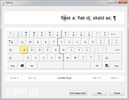
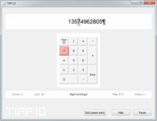

Lesson Parameters | Table of Contents | Results
Lesson Parameters | Table of Contents | Results 
6.3 Getting started with a Lesson
Now you will be shown the practice window. In the upper area you will find the ticker and the virtual keyboard just beneath it. A status bar in the lower part of the screen provides you with additional information.
Place your fingers in the home row position on the keyboard before you start with the actual training lesson. Refer to chapter 4 regarding ergonomics in the workspace.
Now you can initiate the lesson using the space key. Once you have pressed the space key the timer starts and the text you need to type will be displayed in the ticker.

Depending on which settings you have chosen the virtual keyboard will display the home row position and which keys you need to press. The color indicates which finger should be used.
Virtual keyboard color scheme:
Keys not being used (all keys that are not relevant for the current character)
Forefinger
Middle finger
Ring finger
Small finger
Thumb (for the space key only)
The current number of typing errors and current strokes per minute are displayed on the left side of the status tab. The right side displays the elapsed time and the number of characters typed.
Now you follow the ticker and enter the text that appears using the PC keyboard. The character that needs to be typed appears with a gray background in the ticker.
Note: There are two special characters that represent certain keys. The ¶ character is for the enter key and an arrow pointing to the right → is for the tab key (the key with two arrows on the left side of your keyboard).
If you want to pause the lesson you can click on the Pause button with your mouse or press Alt+P on your keyboard (the timer is also paused). You can resume the lesson at any time using the space key.
In Training Lessons 19 and 20 you will learn how to use the numeric key pad on the right side of your keyboard - the virtual keyboard will show a numeric pad in these lessons.

After the dictation has finished or the time is up (depending on your settings) the typing lesson automatically ends and the results are displayed. If you want to exit the lesson before the time is up click on the Exit lesson early button or press Alt+B on your keyboard. Click Yes on the confirmation prompt. After that an additional dialog box will appear and you can decide whether you want to save or discard the results of the lesson.
 Lesson Parameters | Table of Contents | Results
Lesson Parameters | Table of Contents | Results 
© 2006-2011 Tom Thielicke IT Solutions